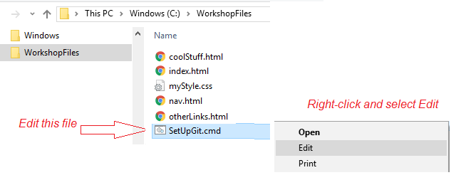

We'll be using two tools that are already loaded on your laptop: GitHub Desktop, and Komodo Edit.
First, we'll create an account with GitHub. (Unless you already have one.) Note: you will need an email address that you can access to confirm your account.) Git is a cloud repository for you code, that will also let you publish a simple website for free.
1Go to https://github.com/, and click the button to
Sign up for GitHub
2Create an account. Your username will be the name on your website, so consider what you would like...
CodeChick ?
GirlsLoveTech ?
MyNameOnTheWeb ?
Have some fun with this!

3Choose 'Unlimited public repositories for free', and click Continue.

4You'll need to go to your email address and verify the account. Just click the link
that GitHub sends you.
5Now that we have an account, we'll need to set it up. Go to GitHub.com, and sign in.
6On the left side is a menu. We want the item 'Repositories'.
7Click 'create one' to create a new repository.

8OK, now we're going to switch to your machine, where we already have your commands set up. On your laptop, go to C:\WorkshopFiles. There is a file there called SetUpGit that we need to edit.
9On the fifth line in the file, there are two places where is says "UserName". Change this to your actual Username that you set up in Git Hub. Then save and close the file.

10Now run the file by double-clicking it. Did it work?
11Last step: Go back to GitHub and click on your username. It should refresh the page, and list the files we've added.

Wow, that was a lot to set up. But now, we can have some fun.
Did this work? Because originally I had to download Git, but that's because I set things up before GitHub Desktop, so I'm hoping GitHub Desktop takes care of this. Also, did it ask where on the harddrive to point to?